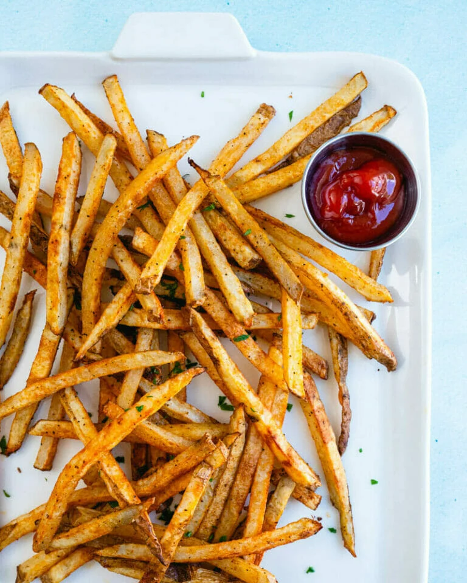

Let's Make Some Fries!

The Ultimate Baked Fries
Want to make the best homemade fries you’ve ever had? Try these Baked French Fries! Yes, we can guarantee they’ll be the best (really). We have made countless batches to get to this ultimate oven baked fries recipe. This recipe uses a few tricks to get the best crispy texture and just the right seasoning blend. Everyone who tries these has a “whoa!” moment when they take the first bite. Let's get into making these fries!
Ingredients:
- 2 large russet potatoes
- 2 tablespoon olive oil
- 1/2 teaspoon smoked paprika
- 1/2 teaspoon garlic powder
- 1/2 teaspoon Old Bay seasoning
- 1/4 teaspoon ground black pepper
- 1/2 teaspoon kosher salt
Instructions:
- Preheat the oven to 425 degrees Fahrenheit. Evenly space the oven racks to ensure even cooking.
- Meanwhile, cut the potatoes into fries. Wash the potatoes, leaving the skins on. Slice off the ends of each potato, then slice off part of the side to make a base. Place the potato half cut side down and cut off a 3/8-inch slice, then lay the slice on its side and cut it into several long strips. Repeat until all potatoes have been cut into fries. The pieces can be uneven, but aim for as uniform of thickness as possible. See the video for full instructions!
- Soak in cold water (10 minutes). Place the cut fries into a medium bowl and rinse with cold water until water is clear. Then fill the bowl with cold water and allow to rest for 10 minutes (while the oven preheats). Then drain the potatoes and dry them thoroughly with a clean dish towel.
- Season the fries! Add the fries to a dry bowl and toss them with the olive oil, smoked paprika, garlic powder, Old Bay, black pepper, and kosher salt. Line two baking sheets with parchment paper. Spread the fries in straight lines on the paper, placing them as far apart as possible.
- Bake! Bake the fries for 20 minutes. Take them out of the oven and carefully flip each fry. Return to oven (reversing the pans on top and bottom racks). Bake additional 8 to 10 minutes until they are crisp and golden brown, watching carefully as the bake time depends on the fry thickness and your oven. (If the majority of the fries seem soft, continue to bake a few more minutes.)
- Taste and add a few more pinches salt if desired. Serve immediately for the best texture and flavor.
Notes
*This makes a good amount of fries, but much less than a restaurant portion (that’s as intended!). The largest quantity of fries that fits on two baking sheets is 2 pounds, you can increase to that much if desired (adjust seasonings accordingly).